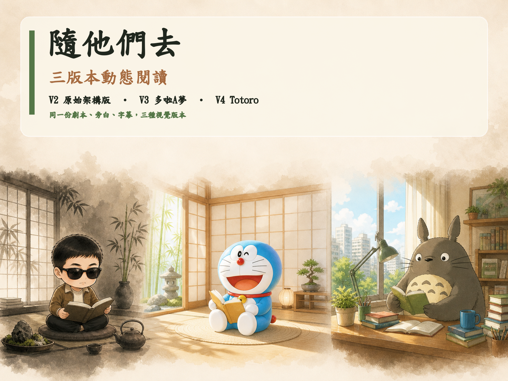

四份 PDF
大綱、劇本、旁白、分鏡卡，形成內容的唯一依據。
《隨他們去》製作紀錄
這一頁把本次從零開始的製作過程整理成可重複使用的工作地圖，讓下一次只要放入四個階段文件與主角圖片，就能更快完成同類成果。

THE WHOLE JOURNEY
本次成果不是單一網頁，而是一套從內容整理到發布素材的完整鏈條。文字只保留在來源文件，視覺、音訊與程式各自分工。
大綱、劇本、旁白、分鏡卡，形成內容的唯一依據。
依旁白與分鏡需求，約每 5 秒安排一張圖片。
共用文字、旁白、字幕與時間軸，只替換主角與畫風。
最後整理成可離線閱讀、可播放、可上傳的成果。
SOURCE MATERIALS
第一步不是急著生圖，而是確認每份文件在流程裡扮演的角色。這樣可以避免把旁白、劇本與分鏡卡混在一起。
CONTENT ANALYSIS
分析階段要先回答：有哪些段落、幾張分鏡、每張圖要畫什麼、動畫如何動、哪段旁白對應哪段字幕。
app-data.jstimeline.jsoncaptions.jsoncaptions.srt這些檔案把文字、時間與畫面連在一起，是三個版本共用的資料骨架。
IMAGE & CHARACTER
三個版本共用同一份內容，但用不同視覺主角呈現。角色外觀要穩定，場景、動作、鏡位與光線才可以依分鏡變化。
以主角參考圖為一致性核心，維持臉型、髮型、墨鏡、服裝與比例。
保留同一份旁白與分鏡意義，改用明亮 3D 動畫卡通視覺。
保留內容與節奏，改用溫暖明亮的 Totoro 閱讀場景。
VOICE & CAPTIONS
這次使用 YunJhe 男聲旁白。旁白段落、字幕句子與圖片時間軸互相對齊，讓閱讀畫面不會搶在聲音前面或落後太多。
使用實際 MP3，確認段落順序與音檔存在。
依實際語音長度建立段落開始與結束時間。
依自然句切成每段約兩行的繁體中文字幕。
約每 5 秒換一張，並保留語意完整與字幕安全區。
11 段旁白、總閱讀時間約 607.56 秒；影片加入 3 秒開頭畫面後，成品約 610.57 秒。
DYNAMIC READING WEB
網頁的重點不是塞滿功能，而是讓旁白、字幕、圖片與閱讀節奏自然地一起走。
封面、舞台、字幕區、控制列、章節導覽與按鈕。
米白、墨黑、茶色、竹青；慢速淡入、推近、平移與留白。
播放／暫停、上一段、下一段、進度、音量、圖片切換與字幕同步。
直立上下排列，橫放壓縮首屏；按鈕保留足夠觸控高度。
上傳包首頁 → versions/v2/上傳包首頁 → versions/v3-doraemon/上傳包首頁 → versions/v4-totoro/上傳包不能依賴本機資料夾名稱，所有連結必須使用包內相對路徑。
VIDEO & DELIVERY
影片沿用同一份圖片、旁白、字幕與時間軸，不另外創造一套不同內容。
REPEATABLE WORKFLOW
S00 Skill 把本次流程整理成可辨識、可檢查、可重複的工作方式。它不會改寫來源內容，也不會在未確認前刪除資料。
project-input/
├─ A01-完整大綱.pdf
├─ A02-動態劇本.pdf
├─ A03-完整旁白.pdf
├─ A04-分鏡卡.pdf
└─ character-reference.pngV2-閱讀網站/
V3-閱讀網站/
V4-閱讀網站/
三版本統整入口/
三版本動態閱讀整合上傳包.zip